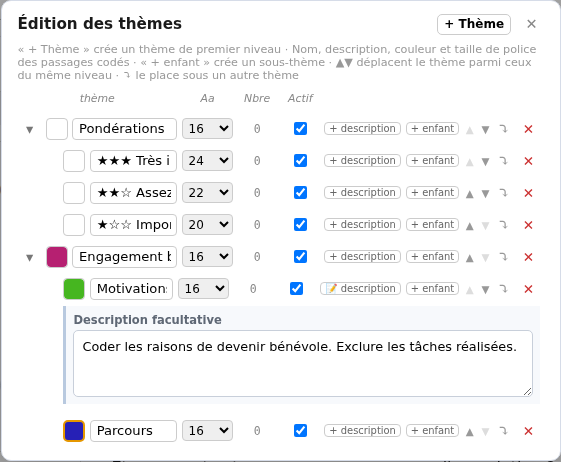

Importer et traiter
Organiser et documenter ses thèmes
Au fil du codage, vous pouvez préciser votre grille d’analyse : donner des noms plus clairs aux thèmes, définir ce qu’ils recouvrent et les regrouper en sous-thèmes. Cette organisation aide à coder de façon cohérente et à relire vos choix.
Les thèmes sont communs à tous les entretiens du corpus. Les modifier ne remplace pas les mots des transcriptions. Cette page décrit le travail dans un corpus local ; pour commencer à associer un thème au texte, consultez le premier codage.
Ouvrir l’édition des thèmes
Vous retrouvez la même fenêtre Édition des thèmes depuis deux endroits :
- Dans la vue Corpus de Importer et traiter, ouvrez l’onglet Thèmes, puis cliquez sur le crayon Éditer les thèmes.
- Dans un entretien ouvert, choisissez l’onglet Thématiques, puis cliquez sur son crayon Éditer les thèmes.
La première entrée sert à organiser la grille ; le codage du texte se fait dans les entretiens. Les règles de suppression diffèrent entre ces deux entrées, comme expliqué plus bas.
Pour essayer sur le terrain fictif, reprenez votre copie de Entretiens déjà importés et le thème Engagement bénévole créé lors du premier codage.
Nommer et décrire un thème
- Pour ajouter un thème de premier niveau, cliquez sur + Thème.
- Saisissez un nom court dans le champ de sa ligne. Pour renommer un thème existant, modifiez ce même champ.
- Appuyez sur Entrée ou quittez le champ pour appliquer le nom.
- Cliquez sur + description pour expliquer quand utiliser le thème. Si une description existe déjà, le bouton porte le mot description accompagné d’une icône de note.
- Saisissez la description, puis quittez son champ pour l’appliquer.
Une description utile indique ce qui entre dans le thème et, si nécessaire, ce qui doit en être exclu. Par exemple, pour Motivations : « Coder les raisons de devenir bénévole. Exclure les tâches réalisées. »
Renommer un thème conserve ses codages : les passages déjà associés retrouvent son nouveau nom. Vous n’avez pas à les coder de nouveau.
Après avoir fermé l’édition avec la croix du haut, cliquez sur ⓘ à côté d’un thème pour lire sa description. ⓘ tout affiche ou masque toutes les descriptions disponibles. Ces boutons ne codent aucun passage.
Créer des sous-thèmes
- Dans Édition des thèmes, repérez le thème qui doit servir de parent.
- Cliquez sur + enfant sur sa ligne.
- Nommez le nouveau sous-thème et appliquez le nom avec Entrée.
Par exemple, vous pouvez organiser Engagement bénévole avec deux sous-thèmes : Motivations et Parcours. Ils apparaissent en retrait sous leur parent. Leur couleur, leur description et leur taille se règlent séparément.

Un sous-thème n’applique pas automatiquement son parent au texte. Coder avec Motivations ne crée pas aussi un codage Engagement bénévole. Si vous souhaitez les deux, appliquez les deux thèmes. Le compteur d’un parent indique ses propres codages, pas la somme de ceux de ses enfants.
La petite flèche devant un parent replie ou déplie ses sous-thèmes dans la liste. Elle ne les désactive pas et ne retire aucun codage.
Changer l’ordre ou le parent
Changer l’ordre parmi les thèmes du même niveau
Dans l’édition, utilisez ▲ pour monter un thème et ▼ pour le descendre parmi ceux qui ont le même parent. Un bouton grisé signifie que le thème est déjà au début ou à la fin de ce groupe. Les sous-thèmes restent avec leur parent.
Déplacer sous un autre thème
- Cliquez sur ⤵ sur la ligne du thème à déplacer.
- Dans la liste qui apparaît, choisissez son nouveau parent. Pour en faire un thème de premier niveau, choisissez — racine du codebook —.
- Cliquez sur Déplacer, ou sur Annuler pour conserver l’emplacement actuel.
Le thème arrive à la fin de son nouveau groupe ; ses propres sous-thèmes le suivent. Il ne peut pas être déplacé sous lui-même ou sous l’un de ses descendants.
Ce déplacement réorganise la liste : les passages restent codés avec le même thème. Ce n’est ni un transfert de codages, ni une fusion avec le thème parent.
Choisir la couleur et la taille des passages
La case colorée à gauche du nom permet de choisir une couleur. La colonne Aa règle la taille de police des passages codés ; une taille choisie les met aussi en gras. Sélectionnez 16, la valeur par défaut, pour revenir à la taille habituelle.
Ces réglages modifient la présentation des passages déjà codés et des futurs codages du même thème, dans tout le corpus. Ils ne changent pas la taille du nom dans le panneau et ne remplacent pas les mots de la transcription.
À quoi servent les Pondérations ?
Les thèmes Pondérations et leurs sous-thèmes étoilés peuvent être présents dans votre corpus. Ils servent à repérer des passages que vous jugez importants, avec une taille de texte plus grande. Ils s’utilisent comme les autres thèmes et ne sont pas un score calculé automatiquement. Vous pouvez les laisser en place sans les utiliser.
Désactiver sans supprimer
Décochez Actif sur la ligne d’un thème pour le rendre passif. Il reste dans la liste, grisé, et ses codages sont conservés, mais leurs marques sont masquées dans l’éditeur. Vous ne pouvez pas poser de nouveau codage avec ce thème tant qu’il est passif.
Recochez Actif pour retrouver les marques des codages existants. Vous pouvez aussi utiliser un clic droit sur le thème dans le panneau, puis Passer en passif ou Passer en actif.
Ce réglage est commun au corpus, pas seulement à votre vue du moment. Désactiver un parent ne désactive pas automatiquement ses sous-thèmes. Pour seulement raccourcir la liste affichée, utilisez plutôt la flèche de repli.
Supprimer un thème avec précaution
Ne supprimez pas un thème pour retirer le codage d’un seul passage : utilisez le retrait d’un codage. Si vous voulez seulement masquer ses marques, rendez-le passif.
Dans Édition des thèmes, la croix à droite d’une ligne demande la suppression. La colonne Nbre compte les codages de ce thème dans le corpus, et non le nombre d’entretiens concernés.
Une confirmation s’affiche toujours, depuis la vue Corpus comme depuis un entretien.
- Si le thème n’est utilisé nulle part, la confirmation l’indique et Supprimer retire simplement le thème.
- Si le thème est utilisé, un encadré jaune indique combien de passages sont codés avec lui, dans l’entretien ouvert et dans les autres. Annuler ne change rien ; Supprimer quand même retire ces codages de tous les entretiens et supprime le thème du corpus.
- Si un entretien concerné est ouvert en édition, enregistrez-le et fermez-le, puis revenez à l’édition des thèmes depuis le corpus. La suppression ne ferme ni ne publie automatiquement votre travail.
- Sur un corpus partagé, tous les entretiens doivent être fermés pour supprimer un thème, car un autre poste peut avoir des modifications non publiées. Un thème encore utilisé ne peut pas être supprimé d’ici : fusionnez-le ou transférez ses codages vers un autre thème.
Le texte des entretiens reste conservé, mais les codages retirés sont perdus. Ne comptez pas sur une restauration après suppression. Les sous-thèmes ne sont pas supprimés avec leur parent : ils remontent au niveau qu’il occupait et conservent leurs propres codages.
Vérifier ce qui est conservé
Les changements de définition sont appliqués dans le corpus au fil des actions. Quittez le champ en cours avant de fermer la fenêtre : sa croix ferme l’édition, elle n’annule pas vos changements.
Rouvrez l’édition depuis un autre entretien pour retrouver la même grille, ses descriptions et sa hiérarchie. Si vous venez de coder du texte, attendez aussi l’état à jour en haut de l’entretien avant de fermer l’application.
Pour la différence entre thème et variable, consultez les notions utiles. Pour les gestes sur le texte, retrouvez le premier codage.